공조냉동기계산업기사 (2017-05-07 기출문제)
1과목: 공기조화
1. 바닥 면적이 좁고 층고가 높은 경우에 적합한 공조기(AHU)의 형식은?
- 수직형
- 수평형
- 복합형
- 멀티존형
(정답률: 91%)

2. 저속덕트에 비해 고속덕트의 장점이 아닌 것은?
- 동력비가 적다.
- 덕트 설치 공간이 적어도 된다.
- 덕트 재료를 절약할 수 있다.
- 원격지 송풍에 적당하다.
(정답률: 79%)
3. 결로현상에 관한 설명으로 틀린 것은?
- 건축 구조물 사이에 두고 양쪽에 수증기의 압력차가 생기면 수증기는 구조물을 통하여 흐르며, 포화온도, 포화압력 이하가 되면 응결하여 발생된다.
- 결로는 습공기의 온도가 노점온도까지 강하하면 공기 중의 수증기가 응결하여 발생된다.
- 응결이 발생되면 수증기의 압력이 상승한다.
- 결로방지를 위하여 방습막을 사용한다.
(정답률: 69%)
4. 패널복사 난방에 관한 설명으로 옳은 것은?
- 천정고가 낮은 외기 침입이 없을 때만 난방효과를 얻을 수 있다.
- 실내온도 분포가 균등하고 쾌감도가 높다.
- 증발잠열(기화열)을 이용하므로 열의 운반능력이 크다.
- 대류난방에 비해 방열면적이 적다.
(정답률: 86%)
5. 실내의 거의 모든 부분에서 오염가스가 발생되는 경우 실 전체의 기류분포를 계획하여 실내에서 발생하는 오염 물질을 완전히 희석하고 확산시킨 다음에 배기를 행하는 환기방식은?
- 자연 환기
- 제3종 환기
- 국부 환기
- 전반 환기
(정답률: 85%)
6. 공기설비의 열회수장치인 전열교환기는 주로 무엇을 경감시키기 위한 장치인가?
- 실내부하
- 외기부하
- 조명부하
- 송풍기부하
(정답률: 73%)
7. 공기조화 방식에서 변풍량 유닛방식(VAV unit)을 풍량제어 방식에 따라 구분할 때, 공조기에서 오는 1차 공기의 분출에 의해 실내공기인 2차 공기를 취출하는 방식은 어느 것인가?
- 바이패스형
- 유인형
- 슬롯형
- 교축형
(정답률: 79%)
8. 보일러 동체 내부의 중앙 하부에 파형노통이 길이방향으로 장착되며 이 노통의 하부 좌우에 연관들을 갖춘 보일러는?
- 노통보일러
- 노통연관보일러
- 연관보일러
- 수관보일러
(정답률: 88%)
9. 물·공기 방식의 공조방식으로서 중앙기계실의 열원설비로부터 냉수 또는 온수를 각 실에 있는 유닛에 공급하여 냉난방하는 공조방식은?
- 바닥취출 공조방식
- 재열방식
- 팬코일 방식
- 패키지 유닛방식
(정답률: 57%)
10. 공조용으로 사용되는 냉동기의 종류로 가장 거리가 먼 것은?
- 원심식 냉동기
- 자흡식 냉동기
- 왕복동식 냉동기
- 흡수식 냉동기
(정답률: 83%)
11. 다익형 송풍기의 송풍기 크기(No)에 대한 설명으로 옳은 것은?
- 임펠러의 직경(mm)을 60(mm)으로 나눈 값이다.
- 임펠러의 직경(mm)을 100(mm)으로 나눈 값이다.
- 임펠러의 직경(mm)을 120(mm)으로 나눈 값이다.
- 임펠러의 직경(mm)을 150(mm)으로 나눈 값이다.
(정답률: 83%)
12. 두께 20cm의 콘크리트벽 내면에 두께 5cm의 스티로폼 단열 시공하고, 그 내면에 두께 2cm의 나무판자로 내장한 건물 벽면의 열관류율은? (단, 재료별 열전도율(kcal/m ‧ h ‧ ℃)은 콘크리트 0.7, 스티로폼 0.03, 나무판자 0.15이고, 벽면의 표면 열전달률 (kcal/m2 ‧ h ‧ ℃)은 외벽 20, 내벽 8이다.)
- 0.31 kcal/m2 ‧ h ‧ ℃
- 0.39 kcal/m2 ‧ h ‧ ℃
- 0.41 kcal/m2 ‧ h ‧ ℃
- 0.44 kcal/m2 ‧ h ‧ ℃
(정답률: 51%)
13. 1925kg/h의 석탄을 연소하여 1⑤50kg/h의 증기를 발생시키는 보일러의 효율은? (단, 석탄의 저위발열량은 25271kJ/kg, 발생증기의 엔탈피는 3717kJ/kg, 급수엔탈피는 221kJ/kg으로 한다.)
- 45.8%
- 64.6%
- 70.5%
- 75.8%
(정답률: 44%)
14. 다음 중 냉방부하에서 현열만이 취득되는 것은?
- 재열 부하
- 인체 부하
- 외기 부하
- 극간풍 부하
(정답률: 73%)
15. 냉수코일의 설계법으로 틀린 것은?
- 공기흐름과 냉수흐름의 방향을 평행류로 하고 대수평균온도차를 작게 한다.
- 코일의 열수는 일반 공기 냉각용에는 4-8열(列)이 많이 사용된다.
- 냉수 속도는 일반적으로 1m/s 전후로 한다.
- 코일의 설치는 관이 수평으로 놓이게 한다.
(정답률: 76%)
16. 가습장치의 가습방식 중 수분무식이 아닌 것은?
- 원심식
- 초음파식
- 분무식
- 전열식
(정답률: 78%)
17. 일반적으로 난방부하의 발생요인으로 가장 거리가 먼 것은?
- 일사 부하
- 외기 부하
- 기기 손실부하
- 실내 손실부하
(정답률: 68%)
18. 보일러의 종류에 따른 특징을 설명한 것으로 틀린것은?
- 주철제 보일러는 분해, 조립이 용이하다.
- 노통연관 보일러는 수질관리가 용이하다.
- 수관 보일러는 예열시간이 짧고 효율이 좋다.
- 관류 보일러는 보유수량이 많고 설치면적이 크다.
(정답률: 70%)
19. 겨울철 침입외기(틈새바람)에 의한 잠열부하(kcal/h)는? (단, Q는 극간풍량(m3/h)이며, to, tr은 각각 실외, 실내온도(℃), xo, xr 각각 실외, 실내 절대습도(kg/kg′)이다.)
- qL=0.24ㆍQㆍ(to-tr)
- qL=0.29ㆍQㆍ(to-tr)
- qL=539ㆍQㆍ(xo, xr)
- qL=717ㆍQㆍ(xo, xr)
(정답률: 73%)
20. 시로코 팬의 회전속도가 N1에서 N2로 변화하였을 때, 송풍기의 송풍량, 전압, 소요동력의 변화 값은?
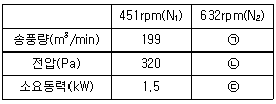
- ㉠ 278.9 ㉡ 628.4 ㉢ 4.1
- ㉠ 278.9 ㉡ 357.8 ㉢ 3.8
- ㉠ 628.9 ㉡ 402.8 ㉢ 3.8
- ㉠ 357.8 ㉡ 628.4 ㉢ 4.1
(정답률: 63%)
2과목: 냉동공학
21. 증발식 응축기의 특징에 관한 설명으로 틀린 것은?
- 물의 소비량이 비교적 적다.
- 냉각수의 사용량이 매우 크다.
- 송풍기의 동력이 필요하다.
- 순환펌프의 동력이 필요하다.
(정답률: 56%)
22. 응축기의 냉매 응축온도가 30℃, 냉각수의 입구수온이 25℃, 출구수온이 28℃일 때, 대수평균온도차(LMTD)는?
- 2.27℃
- 3.27℃
- 4.27℃
- 5.27℃
(정답률: 64%)
23. 무기질 브라인 중에 동결점이 제일 낮은 것은?
- CaCl2
- MgCl2
- NaCl
- H2O
(정답률: 76%)
24. 카르노 사이클을 행하는 열기관에서 1사이클당 80kg‧ m의 일량을 얻으려고 한다. 고열원의 온도(T1)를 300℃, 1사이클당 공급되는 열량을 0.5kcal라고 할 때, 저열원의 온도(T2)와 효율(η)은?
- T2 = 85℃, η = 0.315
- T2 = 97℃, η = 0.315
- T2 = 85℃, η = 0.374
- T2 = 97℃, η = 0.374
(정답률: 48%)
25. 열의 일당량은?
- 860 kg ㆍ m/kcal
- 1/860 kg ㆍ m/kcal
- 427 kg ㆍ m/kcal
- 1/427 kg ㆍ m/kcal
(정답률: 75%)
26. 팽창밸브 종류 중 모세관에 대한 설명으로 옳은 것은?
- 증발기 내 압력에 따라 밸브의 개도가 자동적으로 조정된다.
- 냉동부하에 따른 냉매의 유량조절이 쉽다.
- 압축기를 가동할 때 기동동력이 적게 소요된다.
- 냉동부하가 큰 경우 증발기 출구 과열도가 낮게 된다.
(정답률: 47%)
27. 냉동장치의 저압차단 스위치(LPS)에 관한 설명으로 옳은 것은?
- 유압이 저하되었을 때 압축기를 정지시킨다.
- 토출압력이 저하되었을 때 압축기를 정지시킨다.
- 장치 내 압력이 일정압력 이상이 되면 압력을 저하시켜 장치를 보호한다.
- 흡입압력이 저하되었을 때 압축기를 정지시킨다.
(정답률: 65%)
28. 다음 그림은 역카르노 사이클을 절대온도(T)와 엔트로피(S) 선도로 나타내었다. 면적(1-2-2′-1′)이 나타내는 것은?
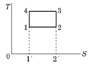
- 저열원으로부터 받는 열량
- 고열원에 방출하는 열량
- 냉동기에 공급된 열량
- 고·저열원으로부터 나가는 열량
(정답률: 68%)
29. 압축냉동 사이클에서 엔트로피가 감소하고 있는 과정은?
- 증발과정
- 압축과정
- 응축과정
- 팽창과정
(정답률: 75%)
30. 스크루 압축기의 특징에 관한 설명으로 틀린 것은?
- 경부하 운전 시 비교적 동력 소모가 적다.
- 크랭크 샤프트, 피스톤링, 커넥팅 로드 등의 마모 부분이 없어 고장이 적다.
- 소형으로써 비교적 큰 냉동능력을 발휘할 수 있다.
- 왕복동식에서 필요한 흡입밸브와 토출밸브를 사용하지 않는다.
(정답률: 58%)
31. 흡수식 냉동기에 관한 설명으로 옳은 것은?
- 초저온용으로 사용된다.
- 비교적 소용량보다는 대용량에 적합하다.
- 열교환기를 설치하여도 효율은 변함없다.
- 물 - LiBr식에서는 물이 흡수제가 된다.
(정답률: 76%)
32. 내부균압형 자동팽창밸브에 작용하는 힘이 아닌 것은?
- 스프링 압력
- 감온통 내부압력
- 냉매의 응축압력
- 증발기에 유입되는 냉매의 증발압력
(정답률: 46%)
33. 압축기의 압축방식에 의한 분류 중 용적형 압축기가 아닌 것은?
- 왕복동식 압축기
- 스크루식 압축기
- 회전식 압축기
- 원심식 압축기
(정답률: 66%)
34. 헬라이드 토치로 누설을 탐지할 때 누설이 있는 곳에서는 토치의 불꽃색깔이 어떻게 변화되는가?
- 흑색
- 파란색
- 노란색
- 녹색
(정답률: 86%)
35. 입형 셸 앤드 튜브식 응축기에 관한 설명으로 옳은 것은?
- 설치 면적이 큰 데 비해 응축 용량이 적다.
- 냉각수 소비량이 비교적 적고 설치장소가 부족한 경우에 설치한다.
- 냉각수의 배분이 불균등하고 유량을 많이 함유하므로 과부하를 처리할 수 없다.
- 전열이 양호하며, 냉각관 청소가 용이하다.
(정답률: 58%)
36. 냉각수 입구온도 33℃, 냉각수량 800L/min인 응축기의 냉각면적이 100m2, 그 열통과율이 750kcal/m2 ‧ h ‧℃이며, 응축온도와 냉각수온도의 평균온도 차이가 6℃일때, 냉각수의 출구온도는?
- 36.5℃
- 38.9℃
- 42.4℃
- 45.5℃
(정답률: 42%)
37. 열펌프 장치의 응축온도 35℃, 증발온도가 -5℃일때, 성적계수는?
- 3.5
- 4.8
- 5.5
- 7.7
(정답률: 56%)
38. 냉동장치에서 펌프다운의 목적으로 가장 거리가 먼 것은?
- 냉동장치의 저압 측을 수리하기 위하여
- 기동 시 액 해머 방지 및 경부하 기동을 위하여
- 프레온 냉동장치에서 오일포밍(oil foaming)을 방지하기 위하여
- 저장고 내 급격한 온도저하를 위하여
(정답률: 72%)
39. 냉매와 화학분자식이 바르게 짝지어진 것은?(오류 신고가 접수된 문제입니다. 반드시 정답과 해설을 확인하시기 바랍니다.)
- R - 500 → CC2F4 + CH2CHF2
- R - 502 → CHClF2 + CClF2CF3
- R - 22 → CCl2F2
- R - 717 → NH4
(정답률: 74%)
40. 열역학 제2법칙을 바르게 설명한 것은?
- 열은 에너지의 하나로써 일을 열로 변화하거나 또는 열을 일로 변환시킬 수 있다.
- 온도계의 원리를 제공한다.
- 절대 0도에서의 엔트로피 값을 제공한다.
- 열은 스스로 고온물체로부터 저온물체로 이동되나 그 과정은 비가역이다.
(정답률: 75%)
3과목: 배관일반
41. 방열기 주변의 신축이음으로 적당한 것은?
- 스위블 이음
- 미끄럼 신축이음
- 루프형 이음
- 벨로스식 이음
(정답률: 80%)
42. 다음 중 동관이음 방법의 종류가 아닌 것은?
- 빅토릭 이음
- 플레어 이음
- 용접 이음
- 납땜 이음
(정답률: 80%)
43. 하나의 장치에서 4방밸브를 조작하여 냉·난방 어느 쪽도 사용할 수 있는 공기조화용 펌프를 무엇이라고 하는가?
- 열펌프
- 냉각펌프
- 원심펌프
- 왕복펌프
(정답률: 77%)
44. 급수펌프의 설치 시 주의사항으로 틀린 것은?
- 펌프는 기초볼트를 사용하여 기초 콘크리트 위에 설치 고정한다.
- 풋 밸브는 동수위면보다 흡입관경의 2배 이상 물속에 들어가게 한다.
- 토출측 수평관은 상향구배로 배관한다.
- 흡입양정은 되도록 길게 한다.
(정답률: 75%)
45. 배수 및 통기설비에서 배수 배관의 청소구 설치를 필요로 하는 곳으로 가장 거리가 먼 것은?
- 배수 수직관의 제일 밑부분 또는 그 근처에 설치
- 배수 수평 주관과 배수 수평 분기관의 분기점에 설치
- 100A 이상의 길이가 긴 배수관의 끝 지점에 설치
- 배수관이 45° 이상의 각도로 방향을 전환하는 곳에 설치
(정답률: 67%)
46. 강관의 두께를 나타내는 스케줄번호(Sch No)에 대한 설명으로 틀린 것은? (단, 사용압력은 P(kg/cm2), 허용응력은 S(kg/mm2)이다.)
- 노멀 스케줄번호는 10, 20, 30, 40, 60, 80, 100, 120, 140, 160(10종류)까지로 되어 있다.
- 허용응력은 인장강도를 안전율로 나눈 값이다.
- 미터계열 스케줄번호 관계식은 10×허용응력(S)/사용 압력(P)이다.
- 스케줄번호(Sch No)는 유체의 사용압력과 그 상태에 있어서 재료의 허용응력과 비(比)에 의해서 관두께의 체계를 표시한 것이다.
(정답률: 72%)
47. 다음과 같이 압축기와 응축기가 동일한 높이에 있을 때, 배관 방법으로 가장 적합한 것은?
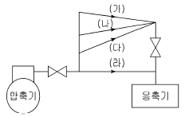
- (가)
- (나)
- (다)
- (라)
(정답률: 84%)
48. 체크밸브에 대한 설명으로 옳은 것은?
- 스윙형, 리프트형, 풋형 등이 있다.
- 리프트형은 배관의 수직부에 한하여 사용한다.
- 스윙형은 수평배관에만 사용한다.
- 유량조절용으로 적합하다.
(정답률: 77%)
49. 단열을 위한 보온재 종류의 선택 시 고려해야 할 조건으로 틀린 것은?
- 단위 체적에 대한 가격이 저렴해야 한다.
- 공사 현장 상황에 대한 적응성이 커야 한다.
- 불연성으로 화재 시 유독가스를 발생하지 않아야 한다.
- 물리적, 화학적 강도가 작아야 한다.
(정답률: 85%)
50. 배수배관의 시공 상 주의사항으로 틀린 것은?
- 배수를 가능한 빨리 옥외 하수관으로 유출할 수 있을 것
- 옥외 하수관에서 유해가스가 건물 안으로 침입하는 것을 방지할 수 있을 것
- 배수관 및 통기관은 내구성이 풍부하고 물이 새지 않도록 접합을 완벽히 할 것
- 한랭지일 경우 동결 방지를 위해 배수관은 반드시 피복을 하며 통기관은 그대로 둘 것
(정답률: 85%)
51. 배관제도에서 배관의 높이 표시 기호에 대한 설명으로 틀린 것은?
- TOP : 관 바깥지름 윗면을 기준으로 한 높이 표시
- FL : 1층의 바닥면을 기준으로 한 높이 표시
- EL : 관 바깥지름의 아랫면을 기준으로 한 높이 표시
- GL : 포장된 지표면을 기준으로 한 높이 표시
(정답률: 74%)
52. 10kg의 쇳덩어리를 20℃에서 80℃까지 가열하는데 필요한 열량은? (단, 쇳덩어리의 비열은 0.61kJ/kg ‧ ℃이다.)
- 27 kcal
- 87 kcal
- 366 kcal
- 600 kcal
(정답률: 44%)
53. 증기 수평관에서 파이프의 지름을 바꿀 때 방법으로 가장 적절한 것은? (단, 상향구배로 가정한다.)
- 플랜지 접합을 한다.
- 티를 사용한다.
- 편심 조인트를 사용해 아랫면을 일치시킨다.
- 편심 조인트를 사용해 윗면을 일치시킨다.
(정답률: 71%)
54. 다음 중 증기와 응축수의 밀도차에 의해 작동하는 기계식 트랩은?
- 벨로스 트랩
- 바이메탈 트랩
- 플로트 트랩
- 디스크 트랩
(정답률: 61%)
55. 냉매 배관 시공법에 관한 설명으로 틀린 것은?
- 압축기와 응축기가 동일 높이 또는 응축기가 아래에 있는 경우 배출관은 하향 기울기로 한다.
- 증발기가 응축기보다 아래에 있을 때 냉매액이 증발기에 흘러내리는 것을 방지하기 위해 2m 이상 역 루프를 만들어 배관한다.
- 증발기와 압축기가 같은 높이일 때는 흡입관을 수직으로 세운 다음 압축기를 향해 선단 상향구배로 배관한다.
- 액관 배관 시 증발기 입구에 전자밸브가 있을 때는 루프이음을 할 필요가 없다.
(정답률: 63%)
56. 증기난방에서 고압식인 경우 증기 압력은?
- 0.15 ~ 0.35 kgf/cm2 미만
- 0.35 ~ 0.72 kgf/cm2 미만
- 0.72 ~ 1 kgf/cm2 미만
- 1 kgf/cm2 이상
(정답률: 84%)
57. 증기난방에 비해 온수난방의 특징으로 틀린 것은?
- 예열시간이 길지만 가열 후에 냉각시간도 길다.
- 공기 중의 미진이 늘어 생기는 나쁜 냄새가 적어 실내의 쾌적도가 높다.
- 보일러의 취급이 비교적 쉽고 비교적 안전하여 주택 등에 적합하다.
- 난방부하 변동에 따른 온도조절이 어렵다.
(정답률: 81%)
58. 배수관에 트랩을 설치하는 주된 이유는?
- 배수관에서 배수의 역류를 방지한다.
- 배수관의 이물질을 제거한다.
- 배수의 속도를 조절한다.
- 배수관에 발생하는 유취와 유해가스의 역류를 방지한다.
(정답률: 79%)
59. 배관의 이동 및 회전을 방지하기 위하여 지지점의 위치에 완전히 고정하는 장치는?
- 앵커
- 행거
- 가이드
- 브레이스
(정답률: 72%)
60. 다음 그림에서 나타낸 배관시스템 계통도는 냉방설비의 어떤 열원방식을 나타낸 것인가?
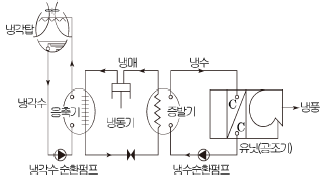
- 냉수를 냉열매로 하는 열원방식
- 가스를 냉열매로 하는 열원방식
- 증기를 온열매로 하는 열원방식
- 고온수를 온열매로 하는 열원방식
(정답률: 83%)
4과목: 전기제어공학
61. 서보기구용 검출기가 아닌 것은?
- 유량계
- 싱크로
- 전위차계
- 차동변압기
(정답률: 49%)
62. 출력의 일부를 입력으로 되돌림으로써 출력과 기준 입력과의 오차를 줄여나가도록 제어하는 제어방법은?
- 피드백 제어
- 시퀀스 제어
- 리세트 제어
- 프로그램 제어
(정답률: 83%)
63. 제어요소의 출력인 동시에 제어대상의 입력으로 제어요소가 제어대상에게 인가하는 제어신호는?
- 외란
- 제어량
- 조작량
- 궤환신호
(정답률: 59%)
64. 다음은 자기에 관한 법칙들을 나열하였다. 다른 3개 와는 공통점이 없는 것은?
- 렌츠의 법칙
- 패러데이의 법칙
- 자기의 쿨롱법칙
- 플레밍의 오른손 법칙
(정답률: 68%)
65. 위치, 각도 등의 기계적 변위를 제어량으로 해서 목푯값의 임의의 변화에 추종하도록 구성된 제어계는?
- 자동조정
- 서보기구
- 정치제어
- 프로그램 제어
(정답률: 72%)
66. 그림은 전동기 속도제어의 한 방법이다. 전동기가 최대출력을 낼 때 사이리스터의 점호각은 몇 rad이 되는 가?
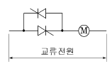
- 0
- π/6
- π/2
- π
(정답률: 57%)
67. 전달함수
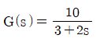
을 갖는 계에 ω=2 rad/sec인 정현파를 줄 때 이득은 약 몇 dB인가?- 2
- 3
- 4
- 6
(정답률: 41%)
68.
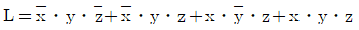
을 간단히 한 식으로 옳은 것은?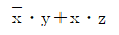
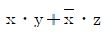
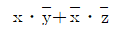
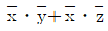
(정답률: 59%)
69. 전력(electric power)에 관한 설명으로 옳은 것은?
- 전력은 전류의 제곱에 저항을 곱한 값이다.
- 전력은 전압의 제곱에 저항을 곱한 값이다.
- 전력은 전압의 제곱에 비례하고 전류에 반비례한다.
- 전력은 전류의 제곱에 비례하고 전압의 제곱에 반비례 한다.
(정답률: 65%)
70. 유도전동기의 속도제어에 사용할 수 없는 전력변환기는?
- 인버터
- 정류기
- 위상제어기
- 사이클로 컨버터
(정답률: 54%)
71. 다음 중 압력을 감지하는 데 가장 널리 사용되는 것은?
- 전위차계
- 마이크로폰
- 스트레인 게이지
- 회전자기 부호기
(정답률: 68%)
72. 다음의 정류회로 중 리플 전압이 가장 작은 회로는? (단, 저항부하를 사용하였을 경우이다.)
- 3상 반파 정류회로
- 3상 전파 정류회로
- 단상 반파 정류회로
- 단상 전파 정류회로
(정답률: 69%)
73. 조절부와 조작부로 구성되어 있는 피드백 제어의 구성요소를 무엇이라 하는가?
- 입력부
- 제어장치
- 제어요소
- 제어대상
(정답률: 72%)
74. 3상 유도전동기의 회전방향을 바꾸려고 할 때 옳은 방법은?
- 기동보상기를 사용한다.
- 전원 주파수를 변환한다.
- 전동기의 극수를 변환한다.
- 전원 3선 중 2선의 접속을 바꾼다.
(정답률: 84%)
75. 그림과 같이 접지저항을 측정하였을 때 R1의 접지저항(Ω)을 계산하는 식은? (단, R12=R1+R2, R23=R2+R3, R31=R3+R1이다.)
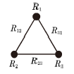
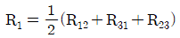
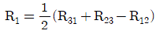
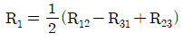
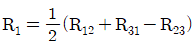
(정답률: 63%)
76. 그림(a)의 병렬로 연결된 저항회로에서 전류 I와 I1의 관계를 그림(b)의 블록선도로 나타낼 때 A에 들어갈 전달함수는?
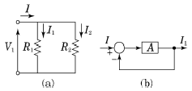
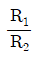
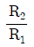
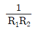
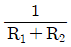
(정답률: 49%)
77. 다음과 같이 저항이 연결된 회로의 전압 V1과 V2의 전압이 일치할 때, 회로의 합성저항은 약 몇 Ω인가?(문제 오류로 전항 정답 처리된문제입니다. 여기서는 가답안으로 발표된 3번을 누르면 정답 처리 됩니다.)
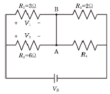
- 0.3
- 2
- 3.33
- 4
(정답률: 66%)
78.
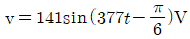
인 전압의 주파수는 약 몇 Hz인가?- 50
- 60
- 100
- 377
(정답률: 60%)
79. 그림과 같은 블록선도가 의미하는 요소는?
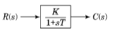
- 비례 요소
- 미분 요소
- 1차 지연 요소
- 2차 지연 요소
(정답률: 76%)
80. 자동제어계의 구성 중 기준입력과 궤환신호와의 차를 계산해서 제어 시스템에 필요한 신호를 만들어 내는 부분은?
- 조절부
- 조작부
- 검출부
- 목표설정부
(정답률: 39%)